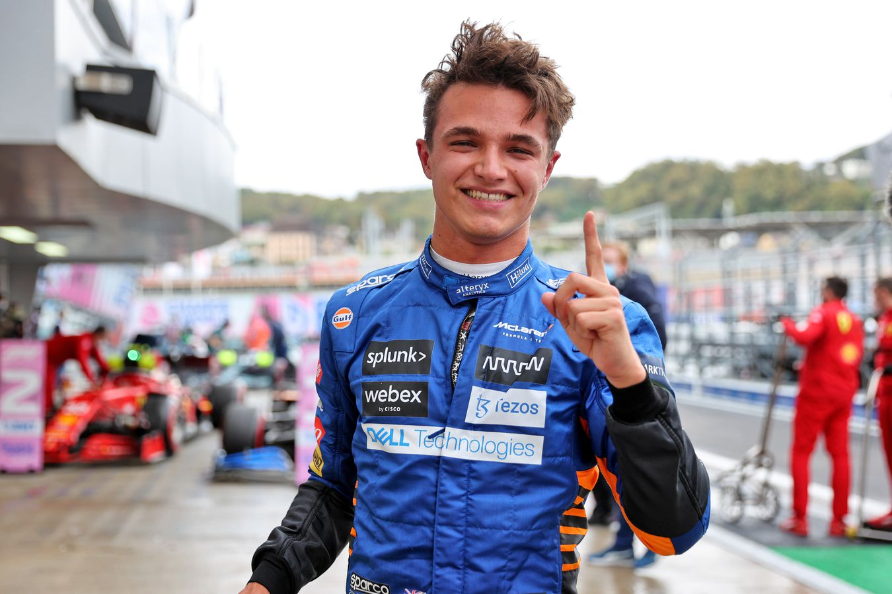
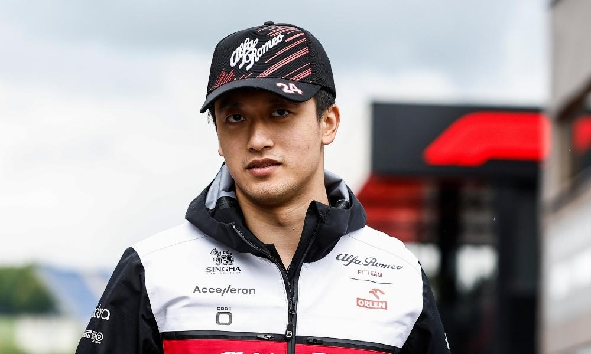

Drivers
RedBull
Max Emilian Verstappen is een Nederlands-Belgisch autocoureur. Hij rijdt onder de Nederlandse vlag in de Formule 1 bij het team van Red Bull Racing. Op 12 december 2021 werd Verstappen de eerste Nederlandse Formule 1-wereldkampioen ooit en in 2022 prolongeerde hij deze titel. Geboren: 30 september 1997 (25 jaar), Hasselt, België, Lengte: 1,81 m, Huidig team: Red Bull Racing, Overwinningen: 35, Broers/zussen: Victoria Verstappen, Datums aangemeld: 2016 (Red Bull Racing), 2015 (Scuderia Toro Rosso)
Sergio Pérez Mendoza een Mexicaans autocoureur die sinds 2011 in de Formule 1 rijdt. Pérez begon als coureur in karting en trad vervolgens aan in onder meer de Formule BMW, het A1GP seizoen 2006-2007, het Britse Formule 3-kampioenschap en de GP2 Series. Geboren: 26 januari 1990 (32 jaar), Guadalajara, Mexico, Huwelijkspartner: Carola Martinez (geh. 2018), Kinderen: Carlota Pérez Martínez, Sergio Pérez Jr., Emilio Pérez, Lengte: 1,73 m, Overwinningen: 4, Broers/zussen: Paola Pérez Mendoza, Antonio Pérez Mendoza, Podiums: 24
Ferrari
Charles Marc Hervé Perceval Leclerc is een Monegaskisch autocoureur. In 2018 maakt hij zijn Formule 1-debuut bij het team van Sauber. Vanaf 2019 rijdt Leclerc voor Ferrari. In 2016 werd hij lid van de Ferrari Driver Academy, het opleidingsprogramma van het Formule 1-team Ferrari. Geboren: 16 oktober 1997 (25 jaar), Monte Carlo, Monaco, Lengte: 1,8 m, Ouders: Hervé Leclerc, Pascale Leclerc, Huidig team: Scuderia Ferrari, Broers/zussen: Arthur Leclerc, Lorenzo Leclerc, Opleiding: School Albert 1er De Monaco, Tv-programma's: Formula 1: Drive to Survive
Carlos Sainz Vázquez de Castro - alias Carlos Sainz jr. - is een Spaans autocoureur en de zoon van voormalig wereldkampioen rally Carlos Sainz. Hij won in 2014 de Formule Renault 3.5 Series. Totdat hij in 2015 voor Toro Rosso zijn Formule 1-debuut maakte, was hij lid van het Red Bull Junior Team. Geboren: 1 september 1994 (28 jaar), Madrid, Spanje, Lengte: 1,78 m, Broers/zussen: Blanca Sainz Vázquez, Ouders: Carlos Sainz, Reyes Vázquez de Castro, Huidig team: Scuderia Ferrari, Oom: Antonio Sainz, Grootouders: Antonio Sainz Rebollo, Julia Cenamor
Mercedes

Sir Lewis Carl Davidson Hamilton MBE is een Brits Formule 1-coureur en zevenvoudig wereldkampioen. Hij rijdt bij het team van Mercedes. Hamilton debuteerde in 2007 als Formule 1-coureur, het jaar waarin hij als tweede rijder naast Fernando Alonso voor het McLaren-team uitkwam. Geboren: 7 januari 1985 (37 jaar), Stevenage, Verenigd Koninkrijk, Broers/zussen: Nicolas Hamilton, Nicola Lockhart, Samantha Lockhart, Huidig team: Mercedes AMG Petronas Formula One Team, Overwinningen: 103, Podiums: 188, Gewicht: 73 kg, Salaris: 40 miljoen USD (2022)
George William Russell is een Brits autocoureur. Sinds 2017 is hij onderdeel van het opleidingsprogramma van het Formule 1-team van Mercedes. Dat jaar werd hij ook kampioen in de GP3 Series. In 2018 stapte hij over naar de Formule 2, waar hij eveneens kampioen werd. Geboren: 15 februari 1998 (24 jaar), King's Lynn, Verenigd Koninkrijk, Lengte: 1,85 m, Ouders: Steve Russell, Alison Russell, Huidig team: Mercedes AMG Petronas Formula One Team, Broers/zussen: Benjy Russell, Cara Russell, Opleiding: Wisbech Grammar School, Eerste overwinning: São Paulo 2022
Alpine
Pierre Gasly is een Frans autocoureur die voor AlphaTauri uitkomt in de Formule 1. Vanaf 2014 is hij lid van het Red Bull Junior Team, het opleidingsprogramma van het Formule 1-team Red Bull Racing. In 2016 werd hij kampioen in de GP2 Series. Geboren: 7 februari 1996 (26 jaar), Rouen, Frankrijk, Lengte: 1,77 m, Huidige teams: Scuderia AlphaTauri, Scuderia Toro Rosso, Ouders: Jean-Jacques Gasly, Datum aangemeld: 2017 (Scuderia Toro Rosso), Tv-programma's: Formula 1: Drive to Survive, Eerste overwinning: Italie 2020
Esteban Ocon is een Frans autocoureur die rijdt voor het Alpine F1 Team, voorheen was hij test/reserve-rijder voor het Mercedes-AMG Petronas F1 Team. Nog eens daarvoor reed hij voor het Force India F1 Team. Hij werd in 2014 kampioen in het Europees Formule 3-kampioenschap en in 2015 GP3-kampioen. Geboren: 17 september 1996 (26 jaar), Évreux, Frankrijk, Lengte: 1,86 m, Huidige teams: Alpine F1 Team, Force India F1 Team, Renault F1 Team, Tv-programma's: Formula 1: Drive to Survive, Eerste overwinning: Hongarije 2021, Eerste race: België 2016, Jaren actief: 2016-2018, 2020-heden
Mclaren
Lando Norris is een Brits-Belgisch autocoureur. In 2015 werd hij kampioen in de MSA Formula en in 2016 won hij de Toyota Racing Series, de Eurocup Formule Renault 2.0 en de Formule Renault 2.0 NEC. Geboren: 13 november 1999 (23 jaar), Bristol, Verenigd Koninkrijk, Lengte: 1,7 m, Podiums: 6, Ouders: Adam Norris, Cisca Wauman, Huidig team: McLaren, Gewicht: 68 kg, Datum aangemeld: 2019 (McLaren)
Oscar Piastri is een Australisch autocoureur. In 2019 werd hij kampioen in de Eurocup Formule Renault 2.0. Vanaf 2020 maakt hij deel uit van de Renault Sport Academy. Dat jaar werd hij tevens kampioen in het FIA Formule 3-kampioenschap. In 2021 werd hij kampioen in de Formule 2. Geboren: 6 april 2001 (21 jaar), Melbourne, Australië, Eerste race: Bahrein 2023, Overwinningen: 0, Teams: Alpine (2022 reserve coureur); McLaren (2023-heden)
AlfaRomeo
Valtteri Viktor Bottas is een Finse coureur. In 2011 werd Bottas kampioen in de GP3 Series voor het team van Lotus ART door zijn teamgenoot James Calado en de Nederlander Nigel Melker te verslaan. Geboren: 28 augustus 1989 (33 jaar), Nastola, Finland, Partner: Tiffany Cromwell (2020–), Huwelijkspartner: Emilia Bottas (geh. 2016–2020), Huidig team: Alfa Romeo Racing, Lengte: 1,73 m, Ouders: Rauno Bottas, Marianne Välimaa, Gewicht: 69 kg

Zhōu Guànyǔ is een Chinees autocoureur die sinds 2022 actief is in de Formule 1 bij Alfa Romeo. Hij was lid van de Alpine Academy, het opleidingsprogramma van Renault. Geboren: 30 mei 1999 (23 jaar), Shanghai, China, Lengte: 1,76 m, Huidig team: Alfa Romeo Racing, Datum aangemeld: 2022 (Sauber), Opleiding: Birkdale Prep School, Laatste race: Abu Dhabi 2022, Overwinningen: 0
AstonMartin
Fernando Alonso Díaz is een Spaans autocoureur, die sinds 2001 actief is in de Formule 1. Van 2018 tot 2019 was hij actief in het FIA World Endurance Championship voor Toyota. Hij werd in 2005 en 2006 wereldkampioen in de Formule 1 voor Renault. Geboren: 29 juli 1981 (41 jaar), Oviedo, Spanje, Huwelijkspartner: Raquel del Rosario (geh. 2006–2011), Partner: Linda Morselli, Lengte: 1,71 m, Huidig team: Alpine F1 Team, Boeken: Alonso : ma vie pied au plancher, Broers/zussen: Lorena Alonso Díaz
Lance Strulovitch, beter bekend als Lance Stroll is een Belgisch-Canadees autocoureur, racend onder de Canadese vlag. In 2016 werd hij kampioen in het Europees Formule 3-kampioenschap. In 2017 maakte hij zijn Formule 1-debuut voor het team van Williams. Geboren: 29 oktober 1998 (24 jaar), Montreal, Canada, Huidige teams: Aston Martin Cognizant F1 Team, Racing Point F1 Team, Broers/zussen: Chloe Stroll, Lengte: 1,82 m, Ouders: Lawrence Stroll, Claire-Anne Stroll, Podiums: 3, Grootouders: Leo Strulovitch, Sandra Stroll
Haas
Kevin Magnussen is een Deens autocoureur. Hij is de zoon van voormalig Formule 1-coureur Jan Magnussen. Geboren: 5 oktober 1992 (30 jaar), Roskilde, Denemarken, Huwelijkspartner: Louise Gjørup (geh. 2019), Lengte: 1,74 m, Huidig team: Haas F1 Team, Ouders: Jan Magnussen, Britt Petersen, Boeken: Alt eller intet - Mine år i Formel 1, Broers/zussen: Luca Magnussen
Nicolas "Nico" Hülkenberg is een Duitse autocoureur die sinds 2010 in de Formule 1 actief is. Hij reed eerder voor Williams, Force India, Sauber, Renault en Racing Point en was test- en reserverijder voor Aston Martin-Mercedes, Mercedes en McLaren-Mercedes. Geboren: 19 augustus 1987 (35 jaar), Emmerik, Duitsland, Partner: Egle Ruskyte, Ouders: Klaus Dieter Hülkenberg, Susanne Hülkenberg, Lengte: 1,84 m, Huidige teams: Aston Martin Cognizant F1 Team, Racing Point F1 Team, Broers/zussen: Stephanie Hülkenberg, Eerste race: Bahrein 2010
AlphaTauri
Yuki Tsunoda is een Japans autocoureur. Sinds 2019 is hij lid van het Red Bull Junior Team, het opleidingsprogramma van het Formule 1-team Red Bull Racing. In 2018 werd hij kampioen in het Japans Formule 4-kampioenschap. Geboren: 11 mei 2000 (22 jaar), Sagamihara, Kanagawa, Japan, Lengte: 1,59 m, Opleiding: LCA International Elementary School (2013), Nihon Univ. 3rd Junior & Senior High School, Nihontaiiku University, Huidig team: Scuderia AlphaTauri, Podiums: 38, Polen: 0, Tv-programma's: Red Bull Soap Box Race San Marino 2022
Nyck de Vries is een Nederlandse autocoureur. In 2019 werd hij kampioen in de Formule 2 en in seizoen 2020/2021 wereldkampioen in de Formule E. De Vries maakte zijn debuut in de Formule 1 als invaller bij Williams tijdens de Grand Prix van Italië 2022. Geboren: 6 februari 1995 (27 jaar), Uitwellingerga, Ouders: Hendrik Jan de Vries, Lengte: 1,67 m, Huidig team: Williams Racing, Eerste race: Italië 2022, Jaren actief: 2022–heden, Punten: 2
Williams
Alexander Albon Ansusinha is een Thais-Brits autocoureur. Hij was in 2012 lid van het Red Bull Junior Team en tussen 2013 en 2015 lid van het Lotus F1 Junior Team, het opleidingsprogramma van het Formule 1-team Lotus. In 2019 maakte hij zijn Formule 1-debuut bij het team van Toro Rosso. Geboren: 23 maart 1996 (26 jaar), Londen, Verenigd Koninkrijk, Lengte: 1,86 m, Huidig team: Williams Racing, Ouders: Kankamol Albon, Nigel Albon, Datums aangemeld: 2022 (Williams Racing), 2019 (Scuderia Toro Rosso), Opleiding: Ipswich School, Eerste race: Australië 2019
Logan Sargeant is een Amerikaans autocoureur die anno 2022 uitkomt in de Formule 2. In 2023 zal hij in de Formule 1 rijden voor het team van Williams. Geboren: 31 december 2000 (21 jaar), Fort Lauderdale, Florida, Verenigde Staten, Lengte: 1,81 m, Huidig team: Williams Racing